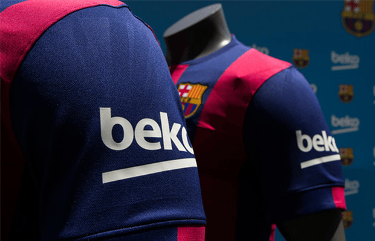
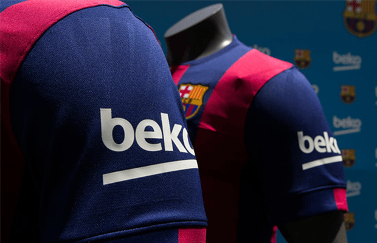

Partenariats et collaborations
Le FC Barcelone a établi de nombreuses collaborations au fil des ans, tant sur le plan sportif que commercial. Le club a noué des partenariats avec des marques internationales telles que Nike, Rakuten, et Beko, renforçant ainsi sa présence mondiale et son influence dans le monde du football. Sur le plan sportif, le Barça collabore régulièrement avec d'autres clubs et organisations pour promouvoir le football à l'échelle mondiale, participer à des tournois internationaux et développer des programmes de formation pour les jeunes talents. Ces collaborations ont contribué à renforcer la position du FC Barcelone en tant que leader mondial du football et à étendre son impact au-delà du terrain de jeu.

 

Collaboration avec Travis Scott
En 2020, le FC Barcelone a collaboré avec le célèbre rappeur américain Travis Scott pour créer une collection de vêtements en édition limitée. Cette collaboration a été un énorme succès, combinant la culture du football avec celle de la musique et de la mode. La collection comprenait des maillots, des sweats à capuche et des accessoires arborant le logo du club et des éléments de design inspirés par l'esthétique unique de Travis Scott. Cette initiative a permis au FC Barcelone de toucher un public plus large et de renforcer son image de marque en tant que club innovant et connecté à la culture populaire.

.png)
.png)
Collaboration avec Drake
En 2021, le FC Barcelone a annoncé une collaboration avec le rappeur canadien Drake, visant à créer une collection de vêtements exclusive. Cette collaboration a été conçue pour célébrer l'héritage du club et son influence mondiale, tout en incorporant le style distinctif de Drake. La collection comprenait des maillots, des sweats à capuche et des accessoires arborant le logo du club et des éléments de design inspirés par la culture urbaine. Cette initiative a renforcé la position du FC Barcelone en tant que club à la pointe de la mode et de la culture populaire, tout en attirant l'attention d'une nouvelle génération de fans.
.png)